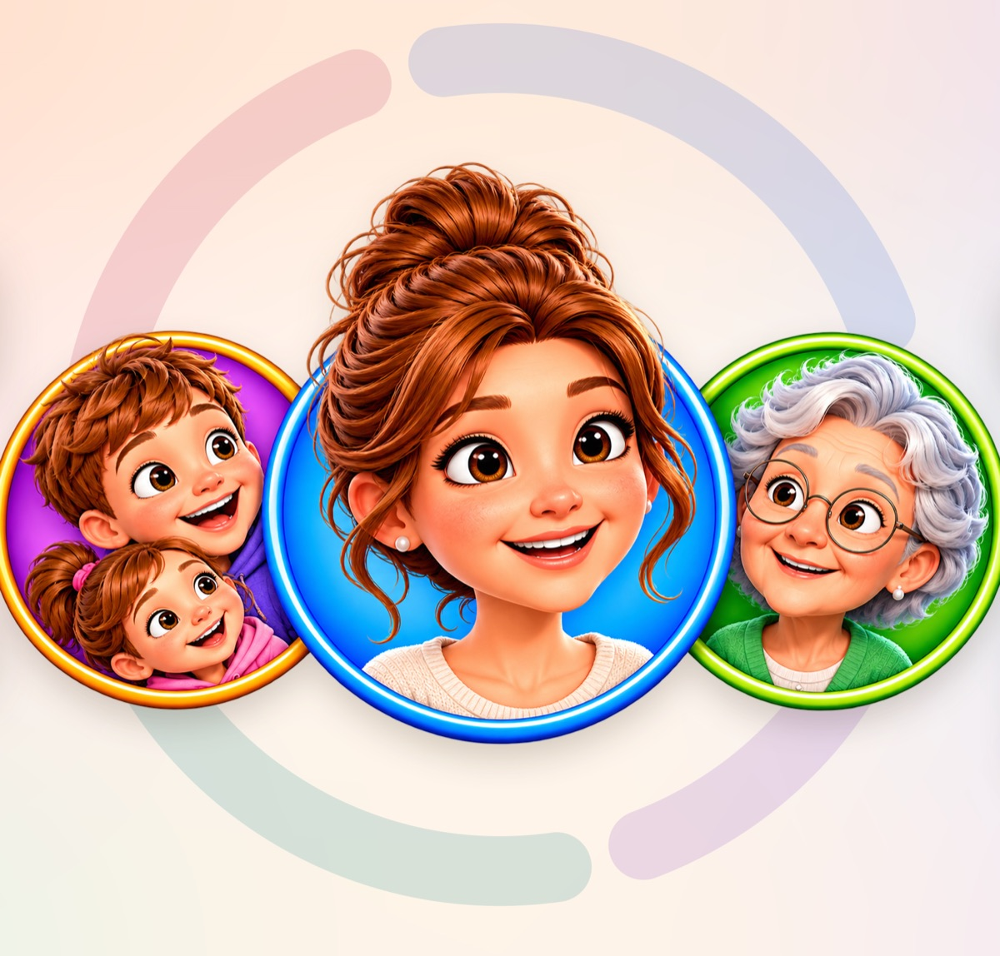

FamilyHealth · All in One Place
Health for the whole family.
Appointments, medication, vaccinations and care in one place. FamilyHealth reminds you on time: calm, clear and no account needed.
- For iPhone with iOS 26
- English and German
- No account

What FamilyHealth does
For you, your children and your parents, even when you don't live under one roof.
Today at a glance
One ring per person shows whether all is well. Open doses, appointments, things due and care tasks on one page.
Medication
Photograph a prescription or medication plan and check it, and schedule, reminders and supply are set up. Tick off in the notification, the widget or on the Lock Screen.
Appointments and visits
With a checklist and questions for the doctor. Afterwards, dictate the visit and let your iPhone structure it, with Apple Intelligence on supported devices.
Vaccinations and check-ups
A digital vaccination record with the next booster, and statutory check-ups in Germany by age and sex, from U2 to cancer screening.
Care together
Share your parents' profile with your siblings, share out care tasks and get a notice when Mum has not ticked off a dose yet.
Simple view
For parents: large type and only what matters today, with one button per dose, the next appointment and an emergency call.
Emergency card
Blood type, allergies, medication and emergency contacts at a glance, emergency services with one tap, and a PDF to share.
Documents and measurements
Scan and search doctor's letters, chart blood pressure or blood glucose, optionally with values from Apple Health.
Your data stays yours.
Stored on your devices and in your own iCloud account. Text recognition and summaries run on your iPhone.
- No account needed
- No ads, no tracking
- Encrypted in your iCloud
- No servers of our own
Note: FamilyHealth organises and reminds. It is not a medical device and no replacement for medical advice. In an emergency, call your local emergency number (112 in Europe).